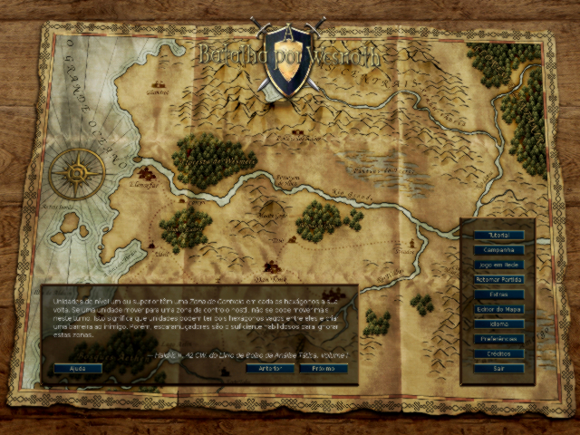
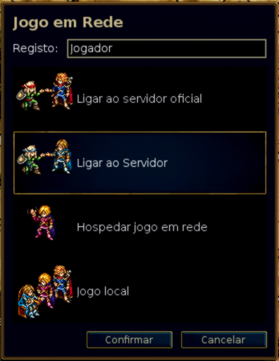
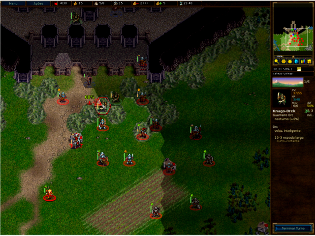
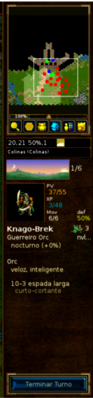
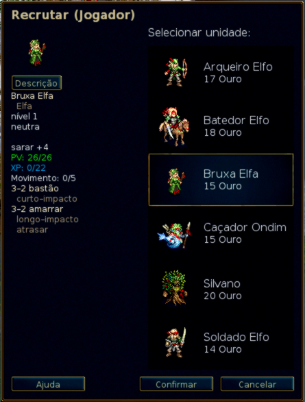

Índice
Lista de Tabelas
- 2.1. Controlos e atalhos gerais
- 2.2. Teclas de atalho especificas das unidades e de turno
- 2.3. Atalhos específicos do modo de planificação
- 2.4. Atalhos específicos para o jogo em rede
- 2.5. Atalhos mistos
- 2.6. Atalhos mistos
- 2.7. Controlos e teclas de atalho especificas da Pandora
- 2.8. Tempo de dia e dano
- 2.9. Bónus de experiência por matar ou lutar com adversários de níveis diferentes
- 2.10. Esferas
A Batalha por Wesnoth é um jogo por turnos de estratégia num ambiente medieval.
Construa um grande exército, progressivamente treinando recrutas rasos em veteranos endurecidos. Em jogos mais tardios, convoca os teus guerreiros mais resistentes e forma um anfitrião mortal contra quem ninguém pode suportar! Escolha as unidades a partir de um grande grupo de especialistas, e a mão de levar uma força com as forças certas para lutar bem em diferentes terrenos contra todo tipo de oposição.
Wesnoth tem muitas diferentes sagas à espera de serem jogados. Podes lutar contra os orcs, mortos-vivos, e os bandidos nas marchas do Reino de Wesnoth, lutar ao lado de dragões nos picos elevados, elfos nos bosques verdes de Aethen, anões nos grandes salões de Gnalga, ou mesmo aquáticos na Baía das Pérolas. Podes lutar para reconquistar o trono de Wesnoth, ou utilizar o teu terrível poder sobre os morto-vivos para dominar a terra dos mortais, ou levar a tua tribo Orc gloriosa à vitória contra os humanos que ousaram roubar as tuas terras.
Serás capaz de selecionar entre mais de 200 tipos de unidades (infantaria, cavalaria, arqueiros e magos são apenas o começo) e combater ações que vão desde pequenas unidades emboscadas até choques de grandes exércitos. Podes também desafiar os teus amigos — ou estranhos — e lutar em batalhas épicas de fantasia com vários jogadores.
Batalha por Wesnoth é software de código aberto, e uma próspera comunidade de voluntários colabora para melhorar o jogo. Podes criar as tuas próprias unidades personalizadas, escrever os teus próprios cenários, e até mesmo escrever campanhas inteiras. O conteúdo mantido pelo usuário está disponível a partir de um servidor de extras e os melhores deles serão incorporados nos lançamentos oficiais da Batalha por Wesnoth.
A parte conhecida do grande continente, em que se rege Wesnoth, é geralmente dividida em três áreas: as Terras do Norte, que são geralmente sem lei; o reino de Wesnoth e o seu principado ocasional, Elensefar; e o domínio dos Elfos do sudoeste nos Bosques Aethen e além.
O Reino de Wesnoth está no centro desta terra. As suas fronteiras são o Rio Grande para o norte, as Colinas Dulatus no leste e no sul, à beira do Bosques Aethen ao sudoeste, e do Oceano para o oeste. Elensefar, uma província outrora de Wesnoth, é limitada pelo rio Grande, ao norte, uma linha vagamente definido com Wesnoth para o leste, a Baía de Pérolas para o sul, e o oceano a oeste.
As Terras do Norte é o país selvagem a norte do Rio Grande. Vários grupos de orcs, anões, elfos e bárbaros povoam a região. Ao norte e ao leste encontra-se a floresta de Lintanir, onde o grande reino dos Elfos do Norte mantém os seus próprios assuntos misteriosos.
Sobre as terras estão aldeias dispersas onde podes curar as tuas tropas e recolher o rendimento necessário para suportar o teu exército. Também terás de atravessar montanhas e rios, atravessar através das florestas, colinas e tundra, e cruzar campos abertos. Em cada uma destas áreas diferentes criaturas adaptaram-se a viver aí e podem viajar com mais facilidade e lutar melhor quando estão em terreno familiar.
No mundo de Wesnoth habitam os Humanos, Elfos, Anões, Orcs, Dragos, Répteis e Aquáticos, Nagas, e muitas outras raças ainda mais obscuras e maravilhosas. Em terras malditas caminham morto-vivos, fantasmas e espectros, monstros espreitam nas suas ruínas e masmorras. Cada um deles adaptado para terrenos particulares. Os humanos habitam principalmente as pradarias temperadas. Nas colinas, montanhas e cavernas subterrâneas orcs e anões estão mais em casa. Nas florestas são os elfos que reinam. Nos oceanos e rios, Aquáticos e Nagas dominam.
Para fins do jogo, as raças agrupam-se em fações, por exemplo, orcs frequentemente cooperam com trogloditas, e elfos ou anões com humanos. Algumas outras fações reflectem as divisões dentro da sociedade humana — leais contra bandidos, por exemplo. Na maioria das campanhas, irás controlar as unidades desenhadas numa única fação. Mas às vezes fações fazem alianças com outros, de modo que podes enfrentar mais de uma fação num cenário.
Quando Wesnoth inicia pela primeira vez exibe um fundo inicial e uma coluna de botões chamados o Menu Principal. Os botões só funcionam com o rato. Para os impacientes, recomendamos que: clique no “Idioma” para definir o idioma, em seguida, clique no botão “Tutorial” para executar o tutorial, e depois jogar a campanha, “Um conto de Dois Irmãos” ao clicar na “Campanha” e selecionando-a da lista fornecida.

- Tutorial
- O tutorial é um jogo real, mas básico, que ensina alguns dos controlos básicos necessários para jogar o jogo. Ganhar ou perder não é importante aqui, mas aprender o que fazer é. Clique no botão Tutorial para iniciar. No tutorial, estás no papel do príncipe Conrado ou a princesa Li’sar, a aprender com o Mago Ancião Delfador — preste atenção ou pode transformar-te numa lagartixa.
- Campanha
- Wesnoth foi concebido essencialmente para jogar campanhas. As campanhas são uma série de cenários agrupados. Clique nesse botão para iniciar uma nova campanha. Serás presenteado com uma lista de campanhas disponíveis no computador (mais podem ser descarregados, se quiseres). Seleciona a tua campanha e clique em OK para iniciar ou Cancelar para sair. Cada campanha tem um nível de dificuldade: fácil, médio (normal), e difícil. Recomendamos médio pois este nível é um desafio, mas não difícil. Não podes mudar a dificuldade durante a campanha. No caso de teres sérios problemas de lutar o teu caminho através da dificuldade fácil, o guia sobre Estratégia Básica irá certamente ajudar-te. Depois de teres selecionado a dificuldade, vais começar com o primeiro cenário da campanha.
- Jogos em Rede
- Clique neste botão para jogar cenários individuais contra um ou mais adversários. Podes jogar os jogos através da Internet ou no teu computador, contra o computador ou adversários humanos. Ao selecionar este botão, um diálogo aparecerá e permitirá que escolhas como quiseres jogar o cenário. Para saberes mais, consulte cenários.
- Carregar
- Clique neste botão para carregar um jogo salvo anteriormente. Irá ser mostrado uma lista de diálogo dos jogos guardados. Seleciona o jogo e clique em Ok para carregar e continuar, ou Cancelar para retornar ao menu principal. Se selecionares um Replay, é possível verificar a caixa de seleção. O jogo carregado vai fazer todos os movimentos desde o início enquanto observa.
- Extras
- Clique neste botão para entrar no servidor de suplementos onde uma multitude de criações de outros jogadores está hospedado. Dentre as coisas disponíveis estão mais campanhas, novas eras (definem fações de unidades) e pacotes de mapas. Com o botão “Remover extras”, podes removê-los quando não os queiras mais.
- Editor de mapa
- Clique neste botão para iniciar o editor de mapas, que permite criar mapas personalizados para jogos em rede ou para criar a tua própria campanha.
- Idioma
- Ao acederes a este botão podes mudar o idioma com o qual queiras jogar. Na primeira vez que Wesnoth inicia, o idioma padrão será o do sistema ou, caso não existir, inglês (americano); mas podes livremente escolher o teu idioma preferido (entre dúzias disponíveis).
- Preferências
- Clique aqui para mudar as definições por defeito.
- Créditos
- Ao aceder a este botão, mostra os créditos do Jogo e lista os contribuidores diversos. Poderás na maior parte das vezes contactar-os em tempo real no canal IRC irc.freenode.org:6667 em #wesnoth.
- Sair
- Clique aqui para fechar Wesnoth.
- Ajuda
- Ao aceder a este botão podes abrir a ajuda do jogo integrada. Provém-te de informações sobre unidades e quaisquer coisas relevantes para jogar. A maioria é mencionada neste manual.
- Próximo
- Clica neste botão para aceder a dica seguinte do “Livro de Táticas de Wesnoth”.
- Anterior
- Clica neste botão para aceder a anterior dica do “Livro de Táticas de Wesnoth”.
Há duas maneiras básicas de jogar a Batalha por Wesnoth:
- Jogar uma sequência de cenários interligados, conhecidos como campanhas, contra o computador.
- Jogar um cenário único contra o computador ou contra oponentes humanos.
Campanhas são sequências de batalhas interligadas e unidas por uma história. Campanhas típicas possuem entre 10 e 20 cenários. A maior vantagem das campanhas é que permitem-te desenvolver o teu exército. Assim como completares um cenário, as unidades remanescentes são salvas para usares no próximo cenário. Se escolheres não usar uma unidade durante um cenário, é transferida na mesma para o próximo cenário, sem nunca perder qualquer unidade recrutada.
A campanha é a forma primária para a qual Wesnoth foi designado para jogar, é a provavelmente mais divertida e é a forma recomendada para novos jogadores aprenderem o jogo.
Um cenário leva cerca de 30 minutos a 2 horas para ser completado. Este é o método mais rápido de se jogar, porém as tuas unidades não serão guardadas e não as podes como numa campanha. Podes jogar cenários contra o computador ou contra outros jogadores tanto na Internet como localmente no teu computador. Cenários são acedidos através do botão “Jogo em Rede” no menu principal.
Em geral, jogos em rede são jogados contra outros jogadores via Internet (também podes jogar numa rede local, se tiveres). Todos estes jogos são coordenados através do servidor de Wesnoth. Os jogos podem levar de uma a 10 horas, dependendo de quantos jogadores estão ligados (e do tamanho do mapa). O tempo médio varia entre 3 a 7 horas. Jogos podem ser guardados e continuados quantas vezes quiseres. E assim, até é possível alguns jogos durarem uma ou duas semanas, mesmo que o tempo de jogo seja de apenas algumas horas. Não pode transferir unidades de jogos em rede de um cenário para o outro, portanto, aumentar a força do teu exército só é possível dentro daquele cenário.
Há várias opções possíveis quando clicares no botão “Jogo em Rede”:

Este será o teu nome no servidor. Se possuíres uma conta no fórum de Wesnoth, podes usar o teu nome de usuário e senha para aceder o servidor oficial. Uma caixa da senha irá aparecer se uma for requerida para o nome de usuário que referiste. Não podes usar um nome registado sem uma senha.
Esta opção liga-te directamente ao servidor oficial. Entrarás na sala principal onde podes criar os teus jogos como quiseres e onde vários jogos já estão abertos e onde, talvez, alguns jogadores já estejam a espera para participar num novo jogo.
Esta opção abre uma caixa de diálogo permitindo a referir o endereço da máquina ao qual te queres juntar. Nesse diálogo também existe o botão “Ver lista” que mostra uma lista dos servidores oficiais que podem ser usados como opção se o servidor principal não estiver disponível.
Uma lista completa dos servidores oficiais e dos usuários encontra-se nesta página: servidores remotos.
Também podes unir-te a servidores hospedados por outro jogador nesta opção do menu. Se tens um servidor a funcionar na tua rede local, apenas entra com o endereço e o número da porta (padrão: 15000). Se, por exemplo, queres ligar-te a um servidor numa máquina com o endereço 192.168.0.10 e a porta padrão, digitaria: 192.168.0.10:15000
Para poderes iniciar um jogo em rede sem usar um servidor externo, deves iniciar o servidor tu mesmo, o que usualmente é chamado wesnothd. Este programa é automaticamente iniciado num processo de fundo quando selecionares esta opção. Será parado uma vez que todos os jogadores deixarem o servidor. Outros jogadores precisam de ligar-se à porta 15000 ao usar o TCP para jogar contigo no teu servidor. Se estás atrás de uma firewall, provavelmente precisarás de modificar as opções dele para permitir conexões pela porta 15000 e dizer ao teu firewall para encaminhar o dito tráfego para a máquina que hospeda o jogo. Não precisas de fazer alterações no firewall para ligar-te a jogos hospedados em servidores públicos ou de outrem.
Isto inicia uma partida somente no teu computador. Podes usar como jogo local (“hotseat”), onde todos jogam em turnos no mesmo computador. Jogos locais levam aproximadamente o mesmo tempo para jogar que jogos em rede. Ou podes jogar um cenário contra oponentes com inteligência artificial (IA). O que pode ser uma boa forma de familiarizar-te com os variados mapas que são usados em jogos em rede antes de jogares contra adversários reais. Também pode ser usado como uma simples maneira de explorar as capacidades das unidades de diferentes fações escolhendo qual fação jogarás e qual fação o teu adversário usará nestas partidas. Claro, podes misturar ambas as formas num jogo, ou seja, jogar junto com amigos contra o computador (IA).

Indiferente se estás a jogar um cenário ou uma campanha, o formato básico do ecrã do jogo é o mesmo. A maior parte do ecrã é preenchido com o mapa que mostra toda a ação que toma conta do jogo. Ao redor do mapa há vários elementos que provêm informações úteis sobre o jogo e estão descritas com mais detalhes abaixo.
No topo do ecrã, da esquerda para a direita, encontram-se os seguintes itens:
- Botão de menu
- Botão de Ações
- Contador de turnos (turno atual / e máximo)
- O teu ouro
- Aldeias (possuídas / número total)
- Total de unidades
- A tua manutenção
- O teu rendimento
- Tempo atual ou tempo restante (em jogos em rede cronometrados)

À direita do ecrã, do topo para baixo estão:
- Previsão do mapa inteiro
- Posição atual (coordenadas X e Y), defesa e custo de movimento da unidade atualmente selecionada.
- Tipo de hexágono atual
- Indicador do tempo de dia
- Perfil da unidade da última unidade selecionada
- Botão Terminar Turno
Quando inicias um cenário ou uma campanha pela primeira vez, tens poucas unidades no mapa. Uma destas será o teu comandante (identificado com uma pequena coroa dourada). O teu comandante é normalmente inicia num castelo, num hexágono especial denominado de torre. Sempre que o teu comandante estiver numa torre (não apenas a tua inicial, mas também a torre de qualquer castelo inimigo que capturares) e possuíres ouro suficiente, poderás recrutar unidades para o teu exército. Em cenários mais tardios, podes convocar as unidades experientes que sobreviveram a cenários anteriores. Daqui, podes começar a construir o teu exército para derrotar o inimigo.
A primeira coisa que provavelmente vais querer é recrutar a tua primeira
unidade. Pressiona Ctrl-R (ou clica com o botão direito
do rato num hexágono de castelo e seleciona “Recrutar”) e poderás recrutar
uma unidade de uma lista de todas as unidades disponíveis. Cada recruta é
colocado num hexágono de castelo vago. Uma vez que preencheste todo o
castelo, não poderás mais recrutar outra unidade até que as unidades
saiam. O comandante adversário é similarmente posto na sua própria torre no
castelo e começará a recrutar as tropas dele, e não fiques a admirar a
paisagem — há uma batalha para vencer.
No fim de cada cenário bem sucedido, todas as tuas tropas sobreviventes são automaticamente guardadas. No início do próximo cenário, poderás convocá-las numa forma similar ao recrutamento. Tropas convocadas são frequentemente mais experientes que recrutas e normalmente são uma melhor escolha.
Todos as partidas usam os mesmos soldados, chamados unidades. Cada unidade é identificada pela raça, nível e classe. Cada unidade tem a sua força e fraqueza baseada nas suas resistências, terreno e nível. Mais detalhes encontram-se na ajuda do jogo.
Assim como as tuas tropas ganham experiência em combate, irão aprender mais técnicas e ficam mais fortes. Também podem morrer em batalha, portanto precisarás de recrutar e convocar mais unidades quando isso acontecer. Mas escolha sabiamente, pois cada um tem a sua força e fraqueza que um oponente astuto irá rapidamente explorar.
Presta atenção cuidadosa à caixa de texto dos Objetivos no inicio de cada cenário. Normalmente irás obter vitória ao derrotar os lideres inimigos, e és derrotado quando o teu próprio líder for morto. Mas os cenários poderão ter outros objetivos de vitória — movendo o teu líder num ponto designado, ou, libertar alguém, ou resolvendo uma adivinha, ou mantendo um cerco até um determinado numero de turnos tiverem passados.
Quando vences um cenário, o mapa será ofuscado e o botão Terminar Turno irá mudar para Terminar Cenário. Podes então fazer coisas como mudar as opções de guardar ou (se estiveres num jogo de rede) falar com outros jogadores antes de pressionar o botão para avançar.
O teu exército não luta de graça. Custa ouro para recrutar unidades e para manter-o. Começas cada cenário com um certo ouro trazido dos cenários anteriores (muito embora cada cenário garanta que tenhas um certo número mínimo de ouro inicial), ganharás mais ouro se atingires os teus objetivos rapidamente e, durante um cenário, se controlares mais aldeias. Cada aldeia que controlas oferece duas peças de ouro por turno. Quando começas um cenário, é geralmente vantajoso ganhar o controlo de quantas aldeias que puderes para assegurar que tenhas ouro suficiente para financiar a guerra. Podes ver a quantidade de ouro e a receita atual no topo do ecrã, como descrito na seção ecrã do jogo.
No início de cada cenário, a tua partida é automaticamente guardada. Se fores derrotado, pode carregá-la e tentar de novo. Uma vez bem sucedido, serás novamente questionado para guardar o próximo cenário e jogá-lo. Se tiveres de parar de jogar durante um cenário, pode guardar no teu turno atual e carregá-lo mais tarde. Lembra-te, um bom jogador da Batalha por Wesnoth nunca precisa de guardar o seu jogo durante um cenário. Porém, muitos dos iniciantes tendem a fazer isto frequentemente.
Estes são os atalhos padrão. Porém as teclas especificas podem variar do sistema usado. Por exemplo, muitas vezes terás de premir a tecla de comando em vez da de controlo se usares um Mac OSX. Podes mudar a maioria dos atalhos para melhor se adaptarem ao teu gosto no Menu de Preferências.
Tabela 2.1. Controlos e atalhos gerais
| F1 | Ajuda da Batalha por Wesnoth |
| Teclas direccionais | Rolar |
| Clique Esquerdo | Selecione, mova unidade |
| Clique Direito | Menu de contexto, cancelar ação |
| Botão do meio | Centraliza no local apontado |
| Escape | Sai do jogo, sai do menu, cancela mensagem |
| Ctrl+s | Guardar o Jogo |
| Ctrl+o | Carregar Jogo |
| Ctrl+p | Ir ao menu de preferências |
| Ctrl+q | Sair do jogo |
| Ctrl+f | Alterna ecrã inteiro/em janela |
| Ctrl+Alt+m | Muda os sons do jogo |
| + | Ampliar |
| - | Reduzir |
| 0 | Ajusta o zoom para o padrão |
| Ctrl+e | Alternar Elipses |
| Ctrl+g | Alternar Visualização da Grelha |
| Ctrl+a | Alterna modo de jogo acelerado |
| Segurar Shift | Alterna entre os modos acelerado e normal enquanto pressionado (temporário!) |
| Ctrl+j | Mostra objetivos de cenário |
| s | Mostrar estatísticas |
| Alt+s | Mostrar a tabela de estado |
| Alt+u | Mostra a lista de unidades |
| l | Mova para a unidade líder |
| Shift+s | Atualizar a Sombra Agora |
Tabela 2.2. Teclas de atalho especificas das unidades e de turno
| Ctrl+r | Recrutar Unidade |
| Ctrl+Alt+r | Repetir último Recruta |
| Alt+r | Convocar a Unidade |
| Ctrl+n | Renomear unidade |
| d | Mostra a descrição da unidade selecionada |
| t | Continua o movimento da unidade que por alguma razão foi interrompido |
| u | Desfaz o último movimento (apenas movimentos que não revelam elementos novos podem ser desfeitos) |
| r | Refazer movimento |
| n | Alterna pelas unidades que ainda possuem movimentos |
| Shift+n | Alterna pelas unidades que ainda possuem movimentos, em ordem reversa |
| Ctrl+v | Mostra os movimentos inimigos (até onde o inimigo pode mover-se no próximo turno) |
| Ctrl+b | Mostra potenciais movimentos do inimigo, se as tuas unidades não estivessem no mapa |
| 1-7 | Mostra a distância que a unidade selecionada pode mover-se naquela quantidade de turnos |
| Espaço | Termina o turno da unidade e circula para a próxima unidade que ainda possui movimentos restantes |
| Shift+Espaço | Faz a unidade atualmente selecionada guardar a posição (termina o movimento dela) |
| Ctrl+Espaço | Termina o turno deste jogador |
Tabela 2.3. Atalhos específicos do modo de planificação
| p | Alternar modo de planeamento |
| y | Executar ação planeada |
| h | Remover ação planeada |
| Página Abaixo | Mova uma ação para baixo na fila |
| Page Up | Mova uma ação para cima na fila |
| Ctrl+y | Executa todas as ações |
| i | Supõe morto |
Tabela 2.4. Atalhos específicos para o jogo em rede
| m | Envia uma mensagem para outro jogador (no modo em rede) |
| Ctrl+m | Envia uma mensagem para os teus aliados (no modo em rede) |
| Alt+m | Envia uma mensagem para todos no jogo (em modo em rede) |
| Alt+c | Ver Registo da Conversa |
| Ctrl+x | Limpar mensagens |
Tabela 2.5. Atalhos mistos
| Ctrl+c | Mostrar Etiquetas Flutuantes |
| / | Procura (encontra legendas ou unidades por nome) |
| Alt+l | Anexa uma legenda a um hexágono |
| Ctrl+l | Definir legenda da equipa |
| : | Modo de comando |
| F5 | Atualizar Cache |
| Shift+c | Criar Unidade (modo de Depuração) |
| f | Correr fórmula IA |
Alguns atalhos num Mac OSX requerem mais do que substituir Ctrl por Cmd. Fica aqui a lista:
Tabela 2.6. Atalhos mistos
| Cmd+w | Sair do jogo |
| Cmd+, | Ir ao menu de preferências |
| Ctrl+F5 | Atualizar Cache |
| Opção + Espaço | Termina o turno deste jogador |
Alguns atalhos foram ligeiramente mudados para fazerem um melhor uso dos controlos inerentes dos sistemas Pandora. Se usares um destes, são estes atalhos que diferem do padrão:
Tabela 2.7. Controlos e teclas de atalho especificas da Pandora
| D-Pad | Rolar |
| Botão de Jogo A | Recrutar Unidade |
| Botão de Jogo B | Desfaz o último movimento (apenas movimentos que não revelam elementos novos podem ser desfeitos) |
| Botão de Jogo X | Alterna pelas unidades que ainda possuem movimentos |
| Botão de Jogo Y | Convocar a Unidade |
| Alt + Botão de Jogo Y | Mova uma ação para baixo da fila |
| Alt + Botão de Jogo X | Mova uma ação para cima da fila |
Cada equipa será dada algum ouro no inicio para começar a jogar, e recebe duas peças de ouro por turno, mais duas por cada aldeia que controlar. Numa campanha, o ouro inicial é o valor mínimo definido pelo cenário, que geralmente diminui assim como o nível de dificuldade aumenta. E ainda muitas vezes receberás uma percentagem do ouro amontoado no cenário anteriormente jogado. A percentagem exacta depende e normalmente pode ser vista em conjunto com os objetivos do cenário.

Principalmente precisarás de ouro para recrutar novas unidades ou convocar unidades de cenários anteriores numa campanha. Unidades podem ser recrutadas ou convocadas quando o líder estiver numa torre e o castelo possuir ao menos um hexágono vago.
- Clique com o botão direito do rato num hexágono de castelo vago e seleciona “Recrutar” para recrutar novas unidades da lista apresentada. O custo para recrutar depende da unidade e é geralmente entre 10 e 20 ouros.
- Clique com o botão direito do rato num hexágono de castelo vago e seleciona “Convocar” para convocar unidades de cenários anteriores. Convocar custa 20 ouros por unidade. Veja convocando unidades para mais informações.
Cada unidade possui também um custo de manutenção. Este custo é geralmente igual ao nível da unidade a não ser que a unidade seja “Leal”, (veja abaixo). Unidades que não são inicialmente recrutadas — como o líder e aqueles que se juntam voluntariamente — geralmente são leais. A manutenção somente é paga se o total da manutenção for maior que o número de aldeias que aquela equipa controla. A manutenção paga é, portanto, a diferença entre o número de aldeias e o custo de manutenção.
Assim, a fórmula para determinar a receita por turno é
2 + aldeias − máximo(0, manutenção − aldeias)
onde a manutenção é igual à soma dos níveis de todas as unidades não-leais.
Se o custo de manutenção for maior que o número de aldeias +2, então a equipa começa a perder ouro; se for igual, não há receita ganha ou perdida.
A Batalha por Wesnoth possui centenas de tipos de unidades que são caraterizadas por um rico leque de estatísticas. Adicionalmente, unidades individuais possuem caraterísticas específicas que as tornam bem diferentes das outras unidades do mesmo tipo. Finalmente, os criadores das campanhas podem adicionar unidades únicas à estas campanhas, expandindo as opções disponíveis para os jogadores.
As estatísticas básicas de uma unidade incluem os seus pontos de vida (PV), o número de pontos de movimentos, as armas que pode usar e os danos que causam. Em adição, as unidades possuem outras caraterísticas como alinhamento e habilidades especiais, que serão descritas abaixo com mais detalhe.
Cada unidade tem um alinhamento: diurno, neutro, nocturno ou limiar. O alinhamento afeta em como esta combate nos diferentes tempos do dia. Unidades neutras não são afetadas por nada. Diurnas infligem mais dano de dia e menos de noite. Nocturnas o contrário, mais a noite e menos de dia. As limiares estão entre luz e sombra tendo a sua máxima força ao crepúsculo.
As duas fases “dia” e “noite” são diferenciadas como manhã, tarde, primeira vigia e segunda vigia, pelas posições do sol e da lua no gráfico da hora do dia.
A seguinte tabela mostra os efeitos dos diferentes tempos de dia e o dano infligido pelas unidades diurnas, nocturnas e limiares:
Tabela 2.8. Tempo de dia e dano
| Turno | Imagem | Fase do Dia | Diurno | Nocturno | Liminar |
|---|---|---|---|---|---|
| 1 |

| Madrugada | -- | -- | -- |
| 2 |

| Dia (manhã) | +25% | −25% | −25% |
| 3 |

| Dia (tarde) | +25% | −25% | −25% |
| 4 |

| Madrugada | -- | -- | -- |
| 5 |

| Noite (primeira vigia) | −25% | +25% | −25% |
| 6 |

| Noite (segunda vigia) | −25% | +25% | −25% |
| Especial |

| Subterrâneo | −25% | +25% | −25% |
Lembra-te que alguns cenários desenrolam-se no subterrâneo, onde reina noite perpetua!
Por exemplo: considera uma luta entre uma unidade diurna e uma nocturna das
quais ambas infligem um dano básico de 12. À madrugada e amanhecer ambos
infligem 12 pontos de dano por golpe. Durante a manhã e a tarde, a unidade
diurna terá (12 \* 1.25) ou 15 pontos, enquanto que a
nocturna terá (12 \* 0.75) ou 9 pontos. Durante a
primeira e segunda vigia a unidade diurna fará 9 pontos de dano comparado
com os 15 da unidade nocturna.
Uma unidade neutra equivalente na luta, fará sempre 12 pontos de dano independentemente da hora do dia.
Unidades têm caraterísticas que reflectem aspectos do seu carácter. Caraterísticas são dadas aleatoriamente quando as unidades são criadas. A maioria recebe duas caraterísticas.
As caraterísticas possíveis da maioria das unidades são:
- Inteligente
- Unidades inteligentes requerem 20% menos experiência que normalmente (Trolls não podem receber esta feição). Unidades inteligentes são muito úteis no inicio de uma campanha pois podem avançar a níveis mais elevados mais rapidamente. Mais tarde nas campanhas “Inteligente” já não é tão útil pois o Avanço Após Nível Máximo (AANM) não é uma melhoria significativa comparado com o avançar de nível. Se tiveres muitas unidades no nível máximo poderás querer unidades com melhores caraterísticas.
- Veloz
- Unidades velozes têm 1 ponto extra de movimento, porém menos 5% em PV. Veloz é a caraterística mais notável, particularmente para unidades mais lentas, como trogloditas ou infantaria pesada. Unidades velozes frequentemente possuem uma mobilidade melhorada em terrenos acidentados, sendo importante considerá-las ao implantar as tuas forças. Unidades velozes também não são tão resistentes quanto as unidades sem esta caraterística e, consequentemente, não tão boas em guardar posições importantes.
- Resistente
- Unidades resistentes possuem mais 4 PV, e mais 1 PV por cada nível. Unidades resistentes podem ser úteis em todos os estágios de uma campanha e é uma caraterística útil para qualquer unidade. A resistência é frequentemente mais útil quando ocorre numa unidade que possui alguma combinação de baixo pontos de vida, boa defesa ou altas resistências. Unidades resistentes são especialmente úteis em guardar posições estratégicas.
- Forte
- Unidades fortes causam mais 1 dano por cada golpe em combate corpo a corpo e possuem mais 1 PV. Enquanto úteis para qualquer unidade de combate fechado, ser forte é mais efectivo para unidades com um grande número de ataques, como os soldados elfos. Unidades fortes podem ser muito úteis quando um pouquinho mais de dano extra é tudo o que se precisa para tornar um golpe danoso num ataque fatal.
Há também algumas caraterísticas que são atribuídas apenas para certas unidades de uma certa raça. São elas:
- Hábil
- Unidades ágeis causam mais 1 dano por cada golpe em ataques à distância. A agilidade é uma caraterística possuída somente pelos elfos. O povo elfo é conhecido pela sua graça singular e a sua grande facilidade com o arco. Alguns, no entanto, são agraciados com um talento natural que excede o dos seus irmãos. Estes elfos infligem um ponto de dano adicional com cada flecha.
- Corajoso
- Não sofre as penalidades de ataque durante o seu tempo do dia desfavorável (infantarias pesada, necrófagos, trogloditas e cadáveres ambulantes).
- Saudável
- Recordados pela sua vitalidade, alguns anões são ainda mais robustos que outros e podem descansar até de viajam. Unidades com vitalidade possuem mais 1 PV (e mais 1 PV por nível), que o usual e recuperam os 2 PV do descanso estando a descansar ou não.
Há também algumas caraterísticas que não são atribuídas aleatoriamente. Estas caraterísticas podem ser tanto atribuídas pelo criador do cenário como podem ser atribuídas baseadas no tipo da unidade:
- Idoso
- Unidades já de uma certa idade poderão ter a caraterística idoso, recebendo uma penalidade de 8 PV, menos um ponto de movimento e menos um ponto de dano ao curto alcance.
- Asno
- Unidades asnas precisam de mais 20% de experiência do que o normal para avançar.
- Elementar
- Unidades elementares não são vivas e, portanto, são imunes a veneno; drenar e a praga também não funcionam neles. Unidades mecânicas possuem a caraterística elementar como única caraterística.
- Feroz
- Unidades ferais só têm uma defesa de 50% em aldeias independentemente do terreno base desta.
- Leal
- Unidades leais não necessitam de manutenção. A maioria das unidades incorrem em custos de manutenção ao final do turno, que é igual ao seu nível. Unidades leais não possuem esse custo. Durante as campanhas, certas unidades podem optar em juntar-se às forças do jogador pela sua própria vontade. Estas unidades são marcadas com a caraterística leal. Apesar de precisarem de pagamento para serem convocadas, nunca precisarão manutenção. Isso pode fazer estas unidades extremamente valiosas durante uma longa campanha, quando o ouro é um suprimento escasso. Esta caraterística nunca é dada às unidades recrutadas, por isso geralmente será tolice dispensar tais unidades ou mandá-las à uma morte inútil.
- Mecânico
- Unidades mecânicas não são vivas e, portanto, são imunes a veneno; drenar e a praga também não funcionam neles. Unidades mecânicas possuem a caraterística mecânico como única caraterística.
- Atrasar
- Unidades de porte desajeitoso e grosso têm a caraterística ¯lenta¯ tendo menos 1 ponto de movimento mas 5% mais PV.
- Morto-Vivo
- Unidades morto-vivas são imunes ao veneno; drenar e praga também não funcionam nelas. As unidades morto-vivas geralmente possuem a caraterística morto-vivo. Já que as unidades morto-vivas são os corpos dos mortos reanimados para combater de novo, os venenos não têm efeito neles. Isto pode torná-los valiosíssimos em lidar com inimigos que usam veneno como arma preferida.
- Fraco
- As unidades podem ser fracos, recebendo uma penalidade de 1 ponto de vida e têm menos dano ao curto alcance.
Certas unidades possuem ataques especiais. São elas:
- Golpe sorrateiro
- Quando usado ofensivamente, este ataque causa o dobro do dano se houver um inimigo do alvo no lado oposto ao alvo e se aquela unidade não estiver incapacitada (por ex. petrificada).
- Raiva
- Quando usado ofensivamente ou defensivamente, este ataque continua o combate até que um dos combatentes sucumbiu, ou 30 rondas de ataques passaram.
- Investida
- Este ataque causa o dobro de dano ao alvo. Também faz com que esta unidade tome o dobro de dano do contra-ataque do alvo.
- Drenar
- Esta unidade drena energia de unidades vivas, curando-se a si própria por metade do dano que causa (arredondado para baixo).
- Iniciativa
- Esta unidade tem sempre o primeiro ataque, mesmo se estiver a defender-se.
- Mágico
- Este ataque tem sempre uma hipótese de acertar de 70% independentemente da capacidade defensiva da unidade a ser atacado.
- Precisão
- Quando usado ofensivamente, este ataque tem sempre no mínimo uma hipótese de 60% de acertar.
- Praga
- Quando uma unidade for morta por um ataque de “praga”, é substituída por um cadáver ambulante da mesma equipa do atacante. Não funciona contra morto-vivos ou contra unidades em aldeias.
- Veneno
- Este ataque envenena alvos vivos. Unidades envenenadas perdem 8 PV cada turno até que seja curado ou reduzido a 1 PV. Veneno não mata, por si, uma unidade.
- Atrasar
- Este ataque atrasa o seu alvo até o fim do turno desta. Atrasar divide o dano causado pelos ataques e o custo de movimento da unidade atrasada é o dobro. Uma unidade atrasada receberá um ícone de caracol na barra de informações quando selecionado.
- Petrificar
- Este ataque torna o alvo em pedra. Unidades petrificadas não podem mover-se nem atacar.
- Enxame
- O número de golpes deste ataque diminui quando a unidade é ferida. O número de golpes é proporcional à quantidade atual de pontos de vida (PV) que a unidade tem. Por exemplo: uma unidade com 3/4 dos seus PV máximos terá 3/4 do número total de golpes.
Algumas unidades possuem habilidades que ou directamente afetam outras ou mudam como esta interage com as outras unidades. Estas habilidades são as seguintes:
- Emboscada
- Esta unidade pode esconder-se nos bosques e manter-se indetectável ao inimigo. Unidades inimigas não podem ver esta unidade enquanto estiver na floresta, excepto se tiverem unidades próximas a ela. Qualquer inimigo que primeiro descobrir esta unidade imediatamente perde todos os seus movimentos restantes.
- Camuflagem
- Esta unidade pode esconder-se em aldeias (com a excepção das aldeias submersas) e continuar indetectável pelo inimigo, excepto se tiver unidades próximas a ela. Qualquer inimigo que primeiro descobrir esta unidade imediatamente perde todos os seus movimentos restantes.
- Curar
- Um curandeiro pode remover o envenenamento de um aliado. No entanto, esta unidade não recuperará pontos de vida no turno em que o veneno for removido.
- canibalismo
- Esta unidade ganha 1 ponto de vida acrescentado ao seu máximo sempre que matar uma unidade viva que não seja imune à praga.
- Sarar +4
- Permite à unidade tratar as feridas de unidades aliadas adjacentes no começo de cada turno. Uma unidade tratada por este curandeiro pode recuperar até 4 pontos de vida (PV) por turno ou não sofrer efeitos de envenenamento. Uma unidade envenenada não será curada completamente por uma unidade com esta habilidade e precisará de procurar uma aldeia ou uma unidade com a habilidade “curar”.
- Sarar + 8
- Esta unidade combina remédios feito de ervas com magia para recuperar unidades mais rapidamente do que normalmente seria possível no campo de batalha. Uma unidade tratada por este curandeiro pode recuperar 8 PV por turno ou atrasar o efeito de veneno. Uma unidade não pode ser curada do seu veneno por um curandeiro e precisa de procurar a ajuda de uma aldeia ou de uma unidade que possa curá-la.
- iluminação
- Esta unidade ilumina a sua área ao redor, fazendo unidades diurnas lutar melhor, e nocturnas pior. Todas as unidades adjacentes a esta unidade irão como se fosse crepúsculo quando é noite, e como se fosse dia à madrugada.
- Liderança
- Esta unidade consegue liderar as suas próprias unidades junto a ela para combater melhor. Unidades adjacentes da mesma equipa de um nível inferior irão causar mais dano em batalha. Quando uma unidade está adjacente, de um nível inferior, e da mesma equipa à uma com liderança, o seu ataque causa 25% mais dano vezes a diferença entre os seus níveis.
- Discrição nocturna
- A unidade torna-se invisível durante a escuridão. Unidades inimigas não podem vê-la à noite, excepto se houver unidades próximas a ela. Qualquer unidade inimiga que primeiro descobrir esta unidade imediatamente perde todos os seus movimentos restantes.
- Regeneração
- Esta unidade irá sarar as suas feridas no inicio do seu turno recuperando 8 PV. Se envenenado, veneno será retirado em vez de curar.
- Escaramuçador
- Esta unidade é treinada em mover por entre os seus inimigos, e ignora todas as Zonas de Controlo.
- Inabalável
- A resistência desta unidade será dobrada, até um máximo de 50%, quando estiver a defender-se. Vulnerabilidades não são afetadas.
- Submergir
- Esta unidade pode esconder-se nas profundezas do mar e manter-se escondida dos seus adversários. Unidades inimigas não podem ver esta unidade enquanto estiver nas águas profundas, excepto se houver inimigos próximas à ela. Qualquer unidade inimiga que encontrar esta unidade imediatamente perde todo o resto do seu movimento.
- Trespasse
- Essa unidade pode saltar entre duas aldeias amigas usando um dos seus movimentos.
Unidades ganham experiência ao combater. Após obter experiência suficiente, avançarão um nível e tornarão-se mais poderosas. A quantidade de experiência adquirida depende do nível do adversário e do resultado do combate: se uma unidade matar o seu oponente, recebe 8 pontos de experiência por nível do adversário (4 pontos se for de nível 0), enquanto que a unidade que sobrevive a um combate sem matar o seu oponente recebe 1 ponto de experiência por nível do inimigo. Em outras palavras:
Tabela 2.9. Bónus de experiência por matar ou lutar com adversários de níveis diferentes
| nível do adversário | bónus por morte | Bónus por combate |
|---|---|---|
| 0 | 4 | 0 |
| 1 | 8 | 1 |
| 2 | 16 | 2 |
| 3 | 24 | 3 |
| 4 | 32 | 4 |
| 5 | 40 | 5 |
| 6 | 48 | 6 |
Após completares um cenário, todas as unidades sobreviventes estarão disponíveis para serem convocadas no próximo. Mas não poderás mover ou atacar com uma unidade no turno em que a recrutaste ou a convocaste. Uma unidade convocada retém os seus níveis, pontos de experiência e (às vezes) itens mágicos adquiridos anteriormente. Também terá todos os seus pontos de vida recuperados.
Ao clicares numa unidade, identificam-se todos os lugares para os quais se
pode mover no turno atual, escurecendo os hexágonos distantes (ao pressionar
as teclas numéricas 2 a 7 irá identificar os hexágonos adicionais que podem
ser alcançados naquele número de turnos de uma maneira similar). Neste modo,
mover ao cursor sobre um hexágono irá identificar o caminho que a tua
unidade tomará para chegar ao seu destino, bem como mostrará informações
adicionais do bónus defensivo naquele hexágono e, se precisar de mais de um,
o número de turnos que a unidade necessita. Se não quiseres mover a unidade,
este modo pode ser cancelado ao selecionar uma unidade diferente (ao clicar
numa nova unidade ou ao usar as teclas n ou
N ou pressionar o botão direito do rato (clique de
comando num Mac) em qualquer lugar do mapa. A elipse no topo da barra de vida da unidade facilita de
forma rápida para ver quais das tuas unidades j+a se moveu e quais ainda o
podem fazer.
Se decidires mover a unidade selecionada, clique no hexágono para o qual queres mover e a tua unidade irá movimentar-se para aí. Se selecionares um destino fora do alcance no turno atual, a unidade irá tentar o seu melhor e mover na mesma, movendo o máximo possível (Movimento de longo curso). No Movimento de longo curso, a tua unidade irá continuar a mover-se na direção ao seu destino nos turnos subsequentes. Podes facilmente desfazer movimentos “longos” no início do teu próximo turno. E até podes mudar o destino de uma unidade selecionando esta e escolhendo um novo destino ou clicando nela (duplo clique) para cancelar o Movimento de longo curso.
Mover-se para uma aldeia neutra ou inimiga irá capturar-a e irá terminar o movimento dessa unidade.
A maioria das unidades possui uma Zona de Controlo que afetam os locais que as tuas unidades podem alcançar e o caminho que estas tomam. Estas restrições são automaticamente reflectidas quando passares o teu rato por cima das unidades (ficando as áreas atingíveis mais claras).
Uma Zona de Controlo de uma unidade estende-se pelos seis hexágonos imediatamente adjacentes a ela e as unidades que se movem numa zona destas são forçadas a parar. Porém unidades com a habilidade de escaramuçador ignoram-as e são capazes de mover-se livremente através delas terem de parar. Unidades de nível 0 são consideradas demasiadas débeis para gerar uma Zona de Controlo e todas as unidades podem esgueirar-se através dos hexágonos em volta destas unidades.
No topo da barra de vida mostrada próxima à cada unidade tua está uma elipse. Este será:
Tabela 2.10. Esferas
| Esfera | Imagem | Descrição |
|---|---|---|
| Verde |

| Se controlares a unidade e ainda não se tenha movido neste turno |
| Amarelo |

| Se controlares a unidade e já se moveu neste turno, mas ainda podia mover-se mais ou atacar |
| Vermelho |

| Se controlares a unidade, mas já tem usado todos os seus movimentos neste turno |
| Azul |

| Se a unidade é aliada que não controlas |
| - |

| Enemy units have no orb on the top of their energy bar |
Debaixo de cada unidade, existe normalmente uma elipse colorida ou base. A cor identifica a equipa a que pertence; em campanhas, a do jogador humano geralmente é vermelha. A cor da equipa também é mostrada em partes da roupa da unidade ou as vezes num brasão dela.
Normalmente, a elipse será um disco sólido. Em unidades de nível 0, verás uma elipse que tem linhas quebradas. Indicando que a unidade não possui uma Zona de Controlo.
Algumas campanhas usam uma base estrelada para indicar líderes e heróis (unidades que são especiais e, por exemplo, não podem morrer no curso do cenário); outras usam um ícone de coroa prateada acima da barra de energia para marcar os heróis. Enquanto poucas não possuem uma imagem específica de indicação. Cada um (se algum) é usado por mera escolha estilística dos criadores das campanhas.
Se te moveres próximo à uma unidade inimiga, podes atacar-o. Clique na tua unidade que está junto à unidade inimiga e clique no adversário para atacar — isso mostrará uma janela com as próximas opções de combate. Cada unidade possui uma ou mais armas com as quais pode atacar. Algumas armas, como as espadas, são armas de ataque corpo a corpo e outras, como o arco, são armas de ataque à distância.
Se atacares com uma arma de ataque a curta distância (corpo a corpo, como espadas, lanças e clavas), o adversário irá contra-atacar com uma arma deste alcance (se tiver). Se atacares com uma arma de ataque à distância (como fundas, flechas e feitiços), o inimigo contra-atacará com a sua arma à distância. Se um inimigo não tiver uma arma do mesmo tipo com a qual estás a atacar, não poderá retaliar, e assim não te causar qualquer dano neste combate.
Different types of attacks do different amounts of damage, and a certain number of strikes may be made with each weapon. For instance, an Elvish Fighter does 5 points of damage with its sword every time it hits, and can strike 4 blows with the sword in one exchange. This is written as 5×4, meaning 5 damage per hit, and 4 strikes.
Cada unidade tem uma hipótese de acertar inerente ao terreno em que se encontra. Por exemplo, unidades em castelos e aldeias têm poucas hipóteses de serem acertadas, e elfos nas florestas têm uma ínfima hipótese de serem acertados. Para ver a percentagem de defesa de uma unidade (por ex. hipótese de saírem sem dano do combate) num terreno, clique na unidade, arrasta o rato até o terreno no qual estás interessado e a percentagem de defesa será mostrada na barra de estado e no próprio terreno.
Podes obter informações adicionais, incluindo a hipótese do atacante ou do defensor podem ser mortos, clicando no botão “cálculo de danos” na janela de combate.
- Cortante: Armas com uma face afiada, para cortar pedaços de carne de uma presa. Exemplos: navalha, espada, sabre, garras de drago.
- Perfurante: Armas com uma ponta afiada e ou com uma haste longa ou um míssil, usado para perfurar o corpo de presas e acertar em órgãos internos. Exemplos: a pique do cavaleiro ou infantaria, flecha.
- Impacto: Armas sem uma ponta nem uma face afiada, mas pesado o suficiente para quebrar ossos de um inimigo. Exemplos: maças, caiados, os punhos Troglodita.
- Gelado: Armas baseados de mísseis de gelo ou frio. Exemplo: a onda gelada do Iniciante das Trevas.
- Fogo: Armas usados para grelhar a presa como um franco. Exemplo: o sobro de fogo dos dragos.
- Arcano: Um ataque que dispersa a magia de animação de cadáveres, espectros, e outras criaturas morto-vivas e espíritos. Exemplo: o ataque mágico do Mago Branco.
Cada unidade é mais ou menos vulnerável a diferentes tipos de ataques. Seis formas na descrição da unidade mostram as forças e fraquezas desta contra os 6 tipos de ataques. Um número de resistência positivo indica que a unidade irá sofrer menos danos daquele tipo de ataque. Um número negativo indica que é especificamente vulnerável a esse tipo de ataque.
Exemplos: as escamas dos dragos protegem-os da maioria dos tipos de ataques, excepto de armas perfurantes e gelados. A cavalaria humana é normalmente bem protegida, porém a excepção de armas perfurantes, que são o seu ponto fraco. Mortos-vivos são muito resistentes a armas cortantes e perfurantes, contudo incrivelmente vulneráveis aos ataques de impacto e arcano.
Utilizar o melhor tipo de ataque contra unidades adversárias substancialmente aumenta as tuas hipóteses em matar-as
Uma unidade pode ser recuperada um máximo de 8 pontos de vida por turno. Uma unidade que nem se mova nem luta durante um turno está a descansar e recuperará 2 pontos de vida. Pontos de vida recuperados através do descanso são adicionados juntamente dos pontos de vida recuperados através da cura. Assim, é possível uma unidade recuperar até 10 pontos de vida por turno.
Há duas maneiras básicas de uma unidade ser curada:
- Esperando numa aldeia. A unidade irá curar 8 PV no inicio de cada turno.
- Ao estar adjacente à unidades com a habilidade de cura. O número de pontos de vida recuperados é especificado na descrição da habilidade da unidade. Isso varia entre sarar +4 e sarar +8.
Trogloditas e Silvanos possuem a habilidade de curar-se naturalmente através da regeneração. Recuperam 8 pontos de vida em cada turno (se estiverem feridos). Nota que por causa de um limite máximo de 8 PV permitido pela cura, Trogloditas e Silvanos não ganham benefícios (de cura, leia-se) adicionais por estarem numa aldeia ou próximo a um curandeiro.
Alguns ataques podem infligir danos de veneno a tua unidade. Quando acontecer, a unidade envenenada irá sofrer 8 pontos de dano em cada turno até ser curada. O veneno pode ser curado estacionado numa aldeia ou ao estar próximo a uma unidade com a habilidade de cura. Unidades com a habilidade sarar só conseguem prevenir o dano do envenenamento mas não remover-o. Quando o veneno é curado, a unidade não ganha ou perde pontos de vida naquele turno em virtude do envenenamento/cura. Uma unidade não pode ser curada normalmente até que seja curada do envenenamento. Descansar ainda é permitido, embora não diminua substancialmente o efeito do veneno.
Algumas outras dicas sobre curar:
- Uma unidade pode levar vários turnos para ser completamente recuperada.
- Curandeiros (bruxas, druidas, fadas, magos brancos, magos da luz, paladinos) curam todas as unidades feridas a volta delas. Assim podes manter unidades próximas a eles na batalha sem as perder.
- Curandeiros não curam unidades inimigas.
- Os curandeiros não podem curar-se a si próprios (mas leia o seguinte)
- Usa os teus curandeiros em pares, para poderem curar-se um ao outro quando necessário.
- Múltiplos curandeiros de diferentes equipas aliadas podem recuperar a mesma unidade e acelerar a cura.
- Trogloditas e Silvanos não podem regenerar outros ao seu redor.
- Trogloditas e Silvanos curam-se de veneno como se estivessem em aldeias.
Os seguintes princípios básicos e dicas são feitas para ajudar a iniciar a tua carreira como um veterano da Batalha por Wesnoth. Alguns dos exemplos mais concretos estão de alguma forma ligadas à campanha “Herdeiro do Trono”.
Não envies unidades feridas à morte certa. Uma vez que uma unidade perca mais da metade dos seus pontos de vida (PV), deves seriamente considerar retroceder-a para um lugar seguro e deixá-la numa aldeia ou aos cuidados de um curandeiro (como as bruxas elfas ou os magos brancos). Curandeiros podem ser realmente úteis!
Por razões práticas: uma unidade gravemente ferida não pode manter à distancia ou matar o adversário. Se entrar em combate o mais certo é que perecerá. Ademais, mandá-la para a morte certa significa que todos os pontos de experiência (XP) dela serão perdidos. Recrutar um substituto pode ser impossível porque o líder não está na fortaleza ou porque o ouro acabou. Mesmo que possas recrutar um substituto, geralmente fica demasiado longe da frente de batalha. Por isso, não desperdices as tuas unidades.
Como guardas as tuas unidades feridas? Estarão melhor guardadas se ficarem longe do alcance do adversário. Obviamente ninguém pode atacar se nem sequer pode alcançar o seu alvo. A próxima seção sobre a Zona de Controlo (ZdC) mostra como restringir a movimentação do inimigo.
No menu de ação, podes selecionar “mostrar movimento inimigo” para destacar todos os possíveis hexágonos para onde o teu adversário pode mover-se. Tomando as Zonas de Controlo em conta. Deste modo, podes verificar se as unidades moribundas (mas importantes) realmente não podem ser atacadas pelo teu adversário se terminasses o teu turno no estado atual.
Quando os teus exércitos defrontam-se, podes tentar ser o primeiro a atacar. Para isso tenta terminar o teu movimento fora do raio de alcance do inimigo. Não poderá atacar, mas geralmente irá adentrar na tua zona de alcance (se ninguém queira alongar a partida demasiadamente).
Cada unidade de nível 1 ou superior mantém uma Zona de Controlo (ZdC) cobrindo todos os 6 hexágonos adjacentes. Significa que uma vez que o adversário mova-se para um destes hexágonos, é forçado em parar e a sua fase de movimento termina (apenas inimigos com a rara habilidade de escaramuçador podem ignorar as ZdC).
Por causa da ZdC, um inimigo não pode escorregar entre duas unidades que estão alinhadas norte-sul ou em linha diagonal e possuem exactamente 1 ou 2 hexágonos entre eles. Combinando estes pares entre uma longa muralha ou usando-os em diferentes direções, podes evitar que o inimigo alcance uma unidade ferida atrás. Terá de derrotar as unidades que impõem a ZdC antes. Se o adversário mal puder alcançá-la, até mesmo uma única unidade pode proteger a região por detrás dela.
Alinhando várias unidades directamente adjacentes ou com exactamente 1 hexágono entre elas, podes construir uma poderosa linha defensiva. Nota que, já que Wesnoth usa hexágonos, uma “linha” não é uma linha direita, mas uma curva em “zigue-zague”. A linha norte-sul e as diagonais são linhas “verdadeiras”.
Vindo de um lado, o adversário pode atacar uma única unidade na tua linha de combate com apenas duas das suas de cada vez. E regra geral, uma unidade saudável sem uma fraqueza particular pode suportar um ataque de duas unidades inimigas normais do mesmo nível ou inferior sem ser morta.
Infelizmente, a tua linha de combate frequentemente tem de se curvar para ou ajustar-se ao terreno ou às unidades no mapa. Nesses pontos nevrálgicos, 3 unidades inimigas podem atacar num único turno. Também acontece isto no final de uma linha, se for demasiada pequena. Usa unidades com muitos pontos de vida em terrenos fortificados ou com resistências apropriadas para guardar estes pontos fracos. Como de certeza absoluta unidades ali morrerão mais rápido tenta usar unidades com nenhum ou com poucos pontos de experiência (XP) para esse propósito evitando heróis ou outras unidades que não queiras perder.
Alinhar as tuas tropas também evita que o inimigo cerca as tuas. Por razões da ZdC, uma unidade entre duas adversárias (em hexágonos opostos) está presa.
Quando uma unidade na linha de frente está muito ferida, podes movê-la para a segurança por trás da tua linha defensiva. Para manter a linha, terás de substituí-la por uma reserva. Portanto, guarda algumas unidades por detrás da linha de frente. Se possuíres curandeiros, unidades feridas atrás da linha de combate serão recuperadas mais rápido.
Nota que as tuas unidades podem passar através dos hexágonos ocupadas por ti ou os teus aliados.
Tenta posicionar as tuas tropas para que possam atacar de um hexágono com uma boa defesa estando o adversário numa posição menos defensiva. Dessa forma, os contra-ataques do inimigo terão menos hipótese de causar dano.
Por exemplo: podes posicionar os teus elfos dentro de um pequeno bosque para atacar orcs que ficam nas planícies enquanto que os teus elfos desfrutam da sua soberba defesa nas florestas.
Avançar e atacar é, obviamente, a parte mais interessante para atingir uma vitória rápida. Mata ou enfraqueça os inimigos no teu caminho e mova a tua linha de defesa para a frente. Pode ser astuto, pois o inimigo irá retaliar no seu turno.
Frequentemente mandarás diversas unidades para um único inimigo para acabar com ele, porém, desta forma, a tua linha defensiva pode romper. Talvez não importa porque estás fora do alcance do inimigo. Mas talvez importa porque estás apenas a tentar enfraquecer um inimigo muito forte e, no próximo turno, este irá retaliar. Talvez uma unidade sobrenatural possa dar o golpe fatal para prevenir tal.
É vantajoso atacar primeiro porque permite-te escolher que unidades entram em combate. Tira vantagem da fraqueza do inimigo: por ex. dirija os teus ataques à distância contra inimigos que não possuam tais. Tira vantagem da vulnerabilidade dos cavaleiros aos ataques perfurantes. Lembra-te, porém, que irão retaliar no turno deles e podes ter fraquezas que o inimigo também sabe explorar.
Por exemplo: Escuteiros podem manter uma posição firme contra brutos orcs e crias trogloditas porque possuem algumas resistências contra ataques cortantes e de impacto. Porém, poderão facilmente morrer contra arqueiros e hostes (armados com armas perfurantes).
Geralmente vale a pena matar definitivamente (ou quase) a unidade atacada. Se não estás certo se poderes matar o inimigo num único turno, assegura-te que a tua unidade ou pode contra-atacar e sobreviver no turno da atacada; ou que estás disposto a perder aquela unidade. Para resistir ao contra-ataque do inimigo no próximo turno, é geralmente sábio atacar de maneira que o inimigo retalha o mínimo de dano possível, em vez de escolheres um ataque que causa o maior dano.
In particular, use your ranged weapons if the enemy has no ranged attack. Using it will often reduce the damage which your units take until the enemy dies.
Lembra-te que unidades diurnas como os humanos lutam melhor de dia e nocturnas como orcs ou morto-vivos de noite: e unidades limiares à madrugada. Idealmente quererás encontrar pela primeira vez o inimigo quando estares forte e/ou este estiver enfraquecido. Quando o inimigo tem o seu tempo favorável, é útil reforçar as tuas linhas de combate e manter uma posição defensiva favorável. Quando o tempo do dia desvantajoso vier, o teu avanço causa então mais dano.
Por exemplo, elfos poderão segurar uma floresta numa invasão nocturna dos orcs e avançar com o levantar do sol. Podes até notar que o computador ativamente reagrupa os seus orcs durante o dia.
No curso de uma campanha, é necessário que construa uma força veterana. Cenários mais avançados irão requerer que terá unidades de nível 2 ou 3 por convocar.
A tuas unidades ganham a maioria de pontos de experiência (XP) ao derrotar uma unidade inimiga (8 XP por nível da unidade morta). Assim, faz mais sentido em enfraquecer o inimigo com as unidades avançadas, mas ceder o golpe fatal para as que mais precisam de XP. Curandeiros em especial são frequentemente fracos em combate e muitas vezes precisam de roubar mortes para avançar de nível.
No começo (quando provavelmente não tens unidades avançadas), tenta dar a maioria dos golpes fatais a uma mão cheia de unidades. Isto apressará o seu desenvolvimento até o nível 2, onde podem liderar outros.
Não te esqueças de ganhar alguma experiência com o teu líder. Terás de manter-o a salvo, mas se o guardares demasiado será de um nível demasiado baixo para sobreviver futuros cenários de qualquer modo.
Lembra-te, a ideia do jogo é divertir-se! Aqui vão algumas recomendações da equipa de desenvolvimento em como tirar a maior diversão do jogo:
- Considera jogar a campanha numa dificuldade “Média”, especialmente se já tiveres experiência com jogos de estratégia. Sentimos que sentes-o bem mais recompensador.
- Não te deixes levar demasiado quando perdes algumas unidades. As campanhas foram designadas para que o jogador perca algumas unidades pelo caminho.
- Não abuses dos jogos gravados. A muito tempo, Wesnoth só permitiu gravar o jogo no fim de um cenário. Gravações a meio do cenário foram adicionados se tiveres de continuar um jogo noutro dia, ou para proteger-te contra quedas. Não recomendamos recarregar jogos vez após vez só porque o teu Mago Branco insiste em morrer. Aprenda como proteger o teu Mago Branco em vez disso, e balanceia os riscos! Faz parte da estratégia.
- Se terás de carregar um jogo gravado, recomendamos ir de volta ao inicio do cenário, para poderes escolher uma nova estratégia que funcione, em vez de simplesmente encontrar números aleatórios que te favoreçam.
- Mas lembra-te, o objetivo é divertir-te! Poderás ter diferentes gostos dos criadores, portanto faça o que gostares mais! Se gostares carregar o jogo gravado cada vez que fazeres um erro, procurando pelo jogo perfeito onde nunca perdes uma unidade, de qualquer meio, avança e faça-o!
- Primeiro, lê os objetivos de cenário. As vezes não precisas de derrotar os líderes inimigas; em vez disto pode ser suficiente sobreviver por um certo número de turnos, ou apanhar um certo objeto.
- Olha para o mapa: o terreno, a posição do teu líder e do(s) outro(s) líder(es).
- Depois, começa a recrutar unidades. Unidades baratas são úteis para amortecer a primeira onda de ataque inimigo; unidades avançadas podem ser trazidas como suporte. Unidades velozes podem ser usadas para explorar o mapa e rapidamente conquistar aldeias.
- Tenta capturar e manter o controlo de tantas aldeias que possível para manteres o teu rendimento.
- Mantenha as unidades em grupo para que o inimigo não possa atacar de muitos lados, e poderes sobrecarregar cada unidade inimiga. Alinha as tuas unidades e o inimigo não poderá atacar as tuas unidades de mais de dois lados.
- Unidades diferentes têm diferentes vantagens e desvantagens dependendo do terreno e de quem estiverem a atacar; clique com o botão direito numa unidade e seleciona “Descrição da Unidade” para saberes mais.
- Podes usar unidades de nível inferior como escudo, para atrasar o inimigo. Ou podes usar-as para bloquear o inimigo chegar às unidades mais importantes.
- Podes infligir dano aos inimigos com as unidades avançadas e matar-as então com as de baixo nível — para dar-lhes mais experiência (e finalmente fazer-as avançar de nível).
- Quando tiveres um Mago Branco (avança do Mago) ou Druida (avança da Bruxa). coloca-o no meio de um circulo de unidades para curar-as assim como se movam pelo mapa (Bruxas também podem fazer isto mas não tão bem).
- Perder unidades é esperado, até mesmo as avançadas.
Tempo do dia realmente importa:
- unidades diurnas infligem mais dano de dia e menos à noite
- unidades nocturnas infligem mais dano à noite e menos de dia
- lembra-te para sempre verificar o tempo do dia na parte direita do ecrã. Planifica — pensa sobre o que acontecerá no turno seguinte além do próprio.
- Algumas unidades são resistentes ou vulneráveis a diferentes tipos de ataque. Unidades montadas são fracas contra ataques perfurantes. Ataques de fogo e arcano destroem morto-vivos. Para ver o quanto uma unidade resiste a um tipo de ataque clique com o botão direito nela, seleciona “Descrição da Unidade”, depois “Resistências”. Irá mostrar-te o quão resistente uma unidade é a diferentes tipos de ataques.
Uma parte importante em ter sucesso na “Batalha por Wesnoth” é manter as tuas unidades saudáveis. Quando as tuas unidades recebem dano podes curar-as ao mover-as para aldeias ou junto de unidades curandeiras (por ex. a Bruxa Elfa e o Mago Branco). Algumas que encontrares, como Trogloditas, têm a habilidade de curar-se a si próprios.
- Unidades avançadas são precisas para rapidamente derrotar líderes inimigos, e evitar perder muitas unidades.
- O mais rápido venceres um cenário, mais ouro receberás; irás ganhar mais ouro por vencer cedo do que de todas as aldeias do cenário e esperar pelo fim dos turnos.
- Derrotar os líderes inimigos normalmente resulta numa vitória instantânea.
- Depois de cenários brutais (onde levas muita punição) existem geralmente cenários “relaxantes” onde podes acumular de forma fácil algum ouro e experiência (unidades avançadas).
- Unidades avançadas têm uma maior manutenção que unidades de nível inferior (1 ouro por nível), unidades leais são excepção.